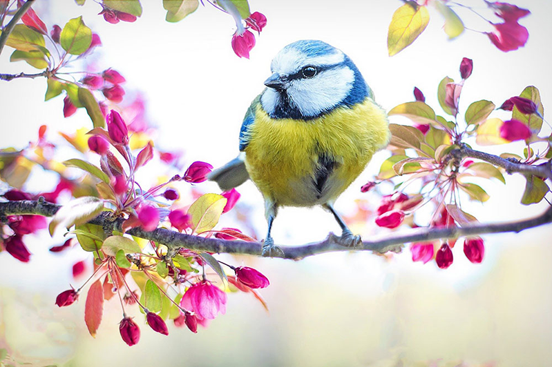

Lab 1 - Part B
Brief Instructions:
Removing Unwanted Object(s) of an Image
In this part of the project, the idea was to remove unwanted object or objects from the picture to make it look different and to the desired look. In the picture, I removed some of the background flowers at the bottom.
I chose to remove some of the flowers in the background because I wanted to know how to revome some items without destroying the way the picture looks.
Last worked on date: 09/12/2021

Last worked on date: 09/12/2021